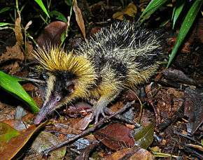
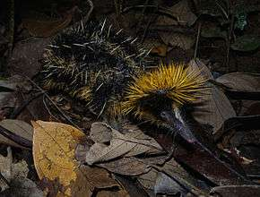

Hemicentetes Semispinosus


Hemicentetes Semispinosus, plus connu en Malgache sous le nom de Sora, est un mammifère insectivore de la famille des Tenrecidae, on les trouve généralement dans les plaines de Madagascar et la côte Est.
Cet animal ressemblant à un petit Porc-épic mais presque dépourvu de queue mesure dans 17cm de long et pèse entre 124 et 280g, le Sora est caractérisé par son pelage noir rayé de bandes jaunes et une crète érectile jaune autour du cou, comme le Porc-épic l’animal possède des poils durs et piquants lui servant de protection et de camouflage vis-à-vis les prédateur.